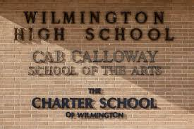
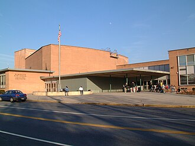
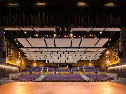
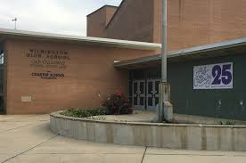

Cabbel Calloway the 3rd was a singer, actor, band leader, and dancer. A performer of the Harlem Renaissance, he created a lasting impact on the musical world with his jazz melodies and scat singing. When a group of parents in Delaware wanted “an excellent academic education infused with the arts”, as described on the school’s website, his legacy further inspired Cab Calloway School of the Arts to be named after him, and his family was deeply involved with the school.
Images




View the other website pages to learn more about Cab Calloway and CCSA (Cab Calloway School of the Arts)!